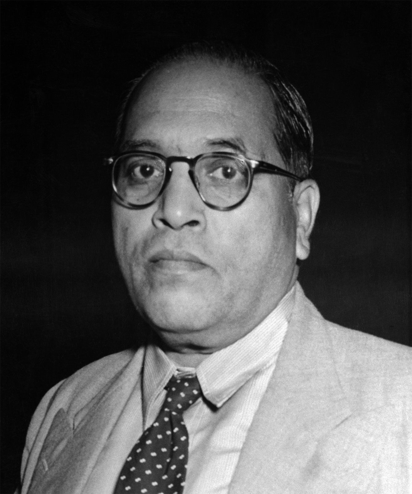

ਡਾ. ਭੀਮ ਰਾਓ ਅੰਬੇਡਕਰ
ਡਾਕਟਰ ਭੀਮ ਰਾਓ ਅੰਬੇਡਕਰ ਭਾਰਤੀ ਸੰਵਿਧਾਨ ਦੇ ਨਿਰਮਾਤਾ ਅਤੇ ਆਜ਼ਾਦ ਭਾਰਤ ਦੇ ਪਹਿਲੇ ਕਾਨੂੰਨ ਮੰਤਰੀ ਸਨ। ਉਨ੍ਹਾਂ ਨੇ ਦਲਿਤਾਂ, ਔਰਤਾਂ ਅਤੇ ਕਿਰਤੀਆਂ ਦੇ ਅਧਿਕਾਰਾਂ ਲਈ ਸੰਘਰਸ਼ ਕੀਤਾ।

ਡਾਕਟਰ ਭੀਮ ਰਾਓ ਅੰਬੇਡਕਰ ਭਾਰਤੀ ਸੰਵਿਧਾਨ ਦੇ ਨਿਰਮਾਤਾ ਅਤੇ ਆਜ਼ਾਦ ਭਾਰਤ ਦੇ ਪਹਿਲੇ ਕਾਨੂੰਨ ਮੰਤਰੀ ਸਨ। ਉਨ੍ਹਾਂ ਨੇ ਦਲਿਤਾਂ, ਔਰਤਾਂ ਅਤੇ ਕਿਰਤੀਆਂ ਦੇ ਅਧਿਕਾਰਾਂ ਲਈ ਸੰਘਰਸ਼ ਕੀਤਾ।
ਜਸਵੰਤ ਸਿੰਘ ਖਾਲੜਾ (1952–1995) ਇੱਕ ਭਾਰਤੀ ਮਨੁੱਖੀ ਅਧਿਕਾਰ ਕਾਰਕੁਨ ਸੀ। ਉਹ ਪੰਜਾਬ ਦੇ ਸਭ ਤੋਂ ਉੱਘੇ ਮਨੁੱਖੀ ਅਧਿਕਾਰ ਕਾਰਕੁਨਾਂ ਵਿੱਚੋਂ ਇੱਕ ਸੀੀ।
ਸੰਤ ਜਰਨੈਲ ਸਿੰਘ ਭਿੰਡਰਾਂਵਾਲਾ ਸਿੱਖ ਧਾਰਮਿਕ ਸੰਸਥਾ ਦਮਦਮੀ ਟਕਸਾਲ ਦੇ 14ਵੇਂ ਮੁਖੀ ਸਨ。 ਉਹ ਪੰਜਾਬ ਵਿੱਚ ਸਿੱਖਾਂ ਦੇ ਹੱਕਾਂ, ਧਾਰਮਿਕ ਪ੍ਰਚਾਰ ਅਤੇ ਅਨੰਦਪੁਰ ਸਾਹਿਬ ਦੇ ਮਤੇ ਦੀ ਰਾਖੀ ਲਈ ਲੜੇ ਗਏ ‘ਧਰਮ ਯੁੱਧ ਮੋਰਚੇ’ ਦੇ ਮੁੱਖ ਆਗੂ ਵਜੋਂ ਉੱਭਰੇ。 ਉਨ੍ਹਾਂ ਦਾ ਜੀਵਨ ਸਿੱਖ ਕੌਮ ਦੇ ਇਤਿਹਾਸ ਵਿੱਚ ਬਹੁਤ ਅਹਿਮ ਰਿਹਾ ਹੈ।
ਕਿਸਾਨ ਅੰਦੋਲਨ ਤੋਂ ਬਾਅਦ, ਦੀਪ ਸਿੱਧੂ ਨੇ ਸਤੰਬਰ 2021 ਵਿੱਚ 'ਵਾਰਿਸ ਪੰਜਾਬ ਦੇ' ਨਾਮਕ ਸੰਸਥਾ ਦੀ ਸਥਾਪਨਾ ਕੀਤੀ । ਉਹਨਾਂ ਦਾ ਮੁੱਖ ਉਦੇਸ਼ ਪੰਜਾਬ ਦੇ ਸੱਭਿਆਚਾਰ, ਅਧਿਆਤਮ, ਅਤੇ ਪੰਜਾਬੀਆਂ ਦੇ ਹੱਕਾਂ ਲਈ ਆਵਾਜ਼ ਉਠਾਉਣਾ ਅਤੇ ਪੰਜਾਬ ਦੇ ਨੌਜਵਾਨਾਂ ਨੂੰ ਆਪਣੇ ਵਿਰਸੇ ਨਾਲ ਜੋੜਨਾ ਸੀ ।
ਸ਼ੁਭਦੀਪ ਸਿੰਘ ਸਿੱਧੂ, ਜਿਨ੍ਹਾਂ ਨੂੰ ਦੁਨੀਆ ਸਿੱਧੂ ਮੂਸੇ ਵਾਲਾ ਦੇ ਨਾਂ ਨਾਲ ਜਾਣਦੀ ਹੈ, ਇੱਕ ਪ੍ਰਸਿੱਧ ਪੰਜਾਬੀ ਗਾਇਕ, ਰੈਪਰ ਅਤੇ ਗੀਤਕਾਰ ਸਨ. ਉਨ੍ਹਾਂ ਨੇ ਆਪਣੀ ਵਿਲੱਖਣ ਗਾਇਕੀ ਅਤੇ ਲਿਖਤ ਸਦਕਾ ਪੰਜਾਬੀ ਸੰਗੀਤ ਜਗਤ ਨੂੰ ਅੰਤਰਰਾਸ਼ਟਰੀ ਪੱਧਰ 'ਤੇ ਇੱਕ ਨਵੀਂ ਪਛਾਣ ਦਿਵਾਈ।
ਅੰਮ੍ਰਿਤਪਾਲ ਸਿੰਘ ਸੰਧੂ ਇੱਕ ਪੰਜਾਬੀ-ਪੱਖੀ ਸਮਾਜਿਕ-ਸਿਆਸੀ ਆਗੂ ਅਤੇ ਖਡੂਰ ਸਾਹਿਬ ਹਲਕੇ ਤੋਂ ਮੌਜੂਦਾ ਸੰਸਦ ਮੈਂਬਰ (MP) ਹਨ. ਉਹ "ਵਾਰਿਸ ਪੰਜਾਬ ਦੇ" ਜਥੇਬੰਦੀ ਦੇ ਮੁਖੀ ਵਜੋਂ ਚਰਚਾ ਵਿੱਚ ਆਏ ਸਨ।
ਭਾਈ ਬਲਵਿੰਦਰ ਸਿੰਘ ਜਟਾਣਾ ਸਿੱਖ ਖਾੜਕੂ ਲਹਿਰ ਦੇ ਇੱਕ ਪ੍ਰਮੁੱਖ ਆਗੂ ਸਨ, ਜਿਨ੍ਹਾਂ ਨੂੰ ਪੰਜਾਬ ਵਿੱਚ ਸਤਲੁਜ-ਯਮੁਨਾ ਲਿੰਕ (SYL) ਨਹਿਰ ਦੇ ਨਿਰਮਾਣ ਨੂੰ ਰੋਕਣ ਲਈ ਮੁੱਖ ਤੌਰ 'ਤੇ ਜਾਣਿਆ ਜਾਂਦਾ ਹੈ। ਮਰਹੂਮ ਪੰਜਾਬੀ ਗਾਇਕ ਸਿੱਧੂ ਮੂਸੇਵਾਲਾ ਦੇ 'SYL' ਗੀਤ ਤੋਂ ਬਾਅਦ ਉਹ ਨੌਜਵਾਨ ਪੀੜ੍ਹੀ ਵਿੱਚ ਕਾਫ਼ੀ ਚਰਚਾ ਵਿੱਚ ਆਏ।
ਬੀਬੀ ਬਿਮਲ ਕੌਰ ਖਾਲਸਾ ਪੰਜਾਬ ਦੇ ਸਿਆਸੀ ਅਤੇ ਸਿੱਖ ਇਤਿਹਾਸ ਦੀ ਇੱਕ ਪ੍ਰਮੁੱਖ ਅਤੇ ਚਰਚਿਤ ਸ਼ਖ਼ਸੀਅਤ ਸਨ, ਜੋ ਸਾਬਕਾ ਭਾਰਤੀ ਪ੍ਰਧਾਨ ਮੰਤਰੀ ਇੰਦਰਾ ਗਾਂਧੀ ਦੇ ਕਾਤਿਲ ਭਾਈ ਬੇਅੰਤ ਸਿੰਘ ਦੀ ਪਤਨੀ ਸਨ. ਉਨ੍ਹਾਂ ਨੇ 1980 ਦੇ ਦਹਾਕੇ ਦੇ ਅਖੀਰ ਵਿੱਚ ਪੰਜਾਬ ਦੀ ਸਰਗਰਮ ਰਾਜਨੀਤੀ ਵਿੱਚ ਹਿੱਸਾ ਲਿਆ ਅਤੇ ਲੋਕ ਸਭਾ ਮੈਂਬਰ (MP) ਵਜੋਂ ਸੇਵਾ ਨਿਭਾਈ।
ਬੀਬੀ ਸ਼ਰਨ ਕੌਰ ਚਮਕੌਰ ਦੀ ਜੰਗ ਤੋਂ ਬਾਅਦ, ਜਦੋਂ ਵੱਡੇ ਸਾਹਿਬਜ਼ਾਦਿਆਂ ਅਤੇ ਹੋਰ ਸਿੰਘਾਂ ਦੀਆਂ ਸ਼ਹੀਦੀ ਦੇਹਾਂ ਮੈਦਾਨ ਵਿੱਚ ਸਨ, ਤਾਂ ਮੁਗਲ ਫ਼ੌਜਾਂ ਦਾ ਪਹਿਰਾ ਸੀ. ਬੀਬੀ ਸ਼ਰਨ ਕੌਰ ਨੇ ਆਪਣੀ ਜਾਨ ਦੀ ਪਰਵਾਹ ਕੀਤੇ ਬਿਨਾਂ, ਰਾਤ ਦੇ ਅੰਧੇਰੇ ਵਿੱਚ ਸਾਰੇ ਸ਼ਹੀਦਾਂ ਦੀਆਂ ਦੇਹਾਂ ਨੂੰ ਇਕੱਠਾ ਕਰਕੇ ਉਨ੍ਹਾਂ ਦਾ ਸਸਕਾਰ ਕੀਤਾ.ੀ।
ਮਹਾਰਾਣੀ ਜਿੰਦ ਕੌਰ (ਰਾਣੀ ਜਿੰਦਾਂ), ਸਿੱਖ ਸਾਮਰਾਜ ਦੇ ਸੰਸਥਾਪਕ ਮਹਾਰਾਜਾ ਰਣਜੀਤ ਸਿੰਘ ਦੀ ਸਭ ਤੋਂ ਛੋਟੀ ਪਤਨੀ ਅਤੇ ਆਖ਼ਰੀ ਸਿੱਖ ਮਹਾਰਾਜਾ ਦਲੀਪ ਸਿੰਘ ਦੀ ਮਾਤਾ ਸੀ। ਉਹ 1843 ਤੋਂ 1847 ਤੱਕ ਸਿੱਖ ਰਾਜ ਦੀ ਸਰਪ੍ਰਸਤ (ਰੀਜੈਂਟ) ਰਹੀ। ਅੰਗਰੇਜ਼ੀ ਹਕੂਮਤ ਦੇ ਖ਼ਿਲਾਫ਼ ਅਟੱਲ ਆਤਮਾ, ਬਹਾਦਰੀ ਅਤੇ ਕੁਰਬਾਨੀ ਕਰਕੇ ਉਹਨਾਂ ਨੂੰ ਪੰਜਾਬ ਦੇ ਇਤਿਹਾਸ ਵਿੱਚ "ਪੰਜ ਦਰਿਆਵਾਂ ਦੀ ਸ਼ੇਰਨੀ" ਵਜੋਂ ਯਾਦ ਕੀਤਾ ਜਾਂਦਾ ਹੈੀ।